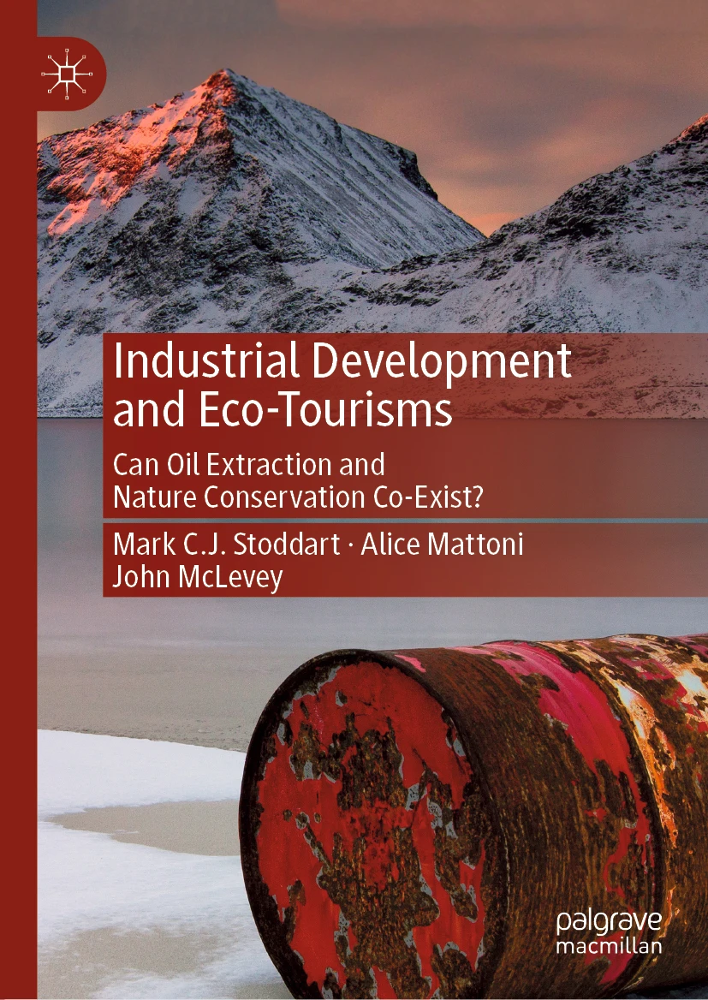

Industrial Development and Eco-Tourisms
Description
This book examines the "oil-tourism interface", the broad range of direct and indirect contact points between offshore oil extraction and nature-based tourism. Offshore oil extraction and nature-based tourism are pursued as development paths across the North Atlantic region. Offshore oil promises economic benefits from employment and royalty payments to host societies, but is based on fossil fuel-intensive resource extraction. Nature-based tourism, instead, is based on experiencing natural environments and encountering wildlife, including whales, seals, or seabirds. They share social-ecological space, such as oceans, coastlines, cities and towns where tourism and offshore oil operations and offices are located. However, they rarely share cultural or political space, in terms of media coverage, public debate, or policy discussion that integrates both modes of development. Through a comparative analysis of Denmark, Iceland, Newfoundland and Labrador, Norway, and Scotland, this book offers important lessons for how coastal societies can better navigate relationships between resource extraction and nature-based tourism in the interests of social-ecological wellbeing.
Contents
- Introduction: Contact Points Between Offshore Oil and Nature-Based Tourism
- The North Atlantic as Object of Inquiry
- Cultural Dimensions of the Oil-Tourism Interface
- Environmental Governance and the Oil-Tourism Interface
- Environmental Movement Conflict and Collaboration in the Oil-Tourism Interface
- Lessons Learned and Social Futures: Building Social-Ecological Wellbeing in Coastal Communities
- Epilogue on Methodology
Reviews
"This book breaks new ground with its introduction of the notion of the oil-tourism interface. Through this analytical and empirical lens, the book explores the tensions between oil extraction and eco-tourism – in terms of extractive and attractive development. The devastating impact of oil extraction on the environment also has detrimental consequences for highly-valued tourism landscapes. One of the main strengths of this book lies in the rich cases, which the authors use to illustrate the complexities of these consequences and the ways in which societies, including policy-makers, business, citizens and social movements, evaluate and try to shape tourism and oil development models. These insights are important in the current context of climate crisis, which both impacts and is impacted by oil extraction and eco-tourism." Julie Uldam, Associate Professor, Department of Management, Society and Communication Copenhagen Business School, Denmark
"The ambivalent relations between fossil fuel extraction and tourism are a particularly apposite research topic in the North Atlantic, where global climate change can be seen at work in often poignant ways. The authors develop a relational political ecology approach which, combined with an 'omnivorous methodology', lends itself well to a nuanced analysis of the oil-tourism interface. This book is a valuable addition to environmental social science scholarship and essential reading for those interested in the complexities of a rapidly changing region." Karl Benediktsson, Professor of Human Geography, University of Iceland, Iceland
"Around the world, the same landscapes that harbor mineral riches are often tourist attractions, setting up tough policy dilemmas. The authors wisely build a framework for understanding and assessing these policies through the concept of "social-ecological wellbeing," applied to fascinating cases on the coasts on both sides of the North Atlantic. Anyone interested in the future of the planet will learn a lot from this book of political ecology." James M. Jasper, Author of The Art of Moral Protest
"Eco-tourism and extractive industries may seem unlikely bedfellows but the reality is that, in many parts of the world, governments pursue both. By examining the politics and cultures of oil and tourism in the North Atlantic, Stoddart, Mattoni and McLevey shed new light on how contradictions and conflicts between the two development paths are managed and, critically, where opportunities to promote more positive social and ecological futures lie. I thoroughly recommend it." Stewart Lockie, Distinguished Professor of Sociology, James Cook University, Australia
"In this sweeping five-nation comparison, the authors untangle the complicated interplay of offshore oil extraction and nature-based tourism for the coastal cultures and political interests of the North Atlantic region. Through the adoption of an "omnivorous" methodological approach, the authors identify how these two industries have co-existed in isolation, cooperation, and conflict. From their findings, they offer a compelling argument for the consistent inclusion of environmental groups in deliberations on these economic activities at sea, ideally for the enhanced wellbeing of North Atlantic communities and the marine environment. Their assessment is particularly salient given climate change and the future significance of the Arctic in both oil exploration and tourism." Patricia Widener, Florida Atlantic University, USA, author of Toxic and Intoxicating Oil